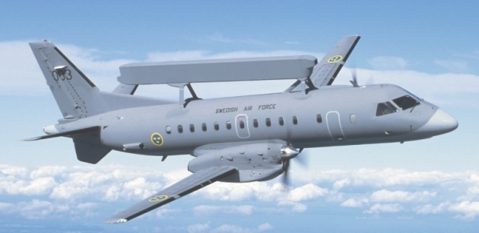
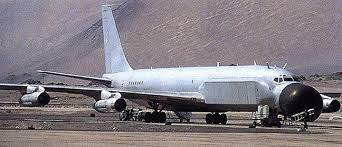
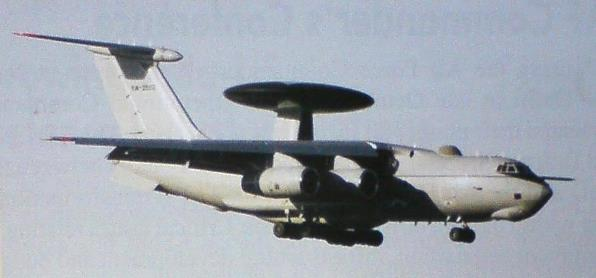
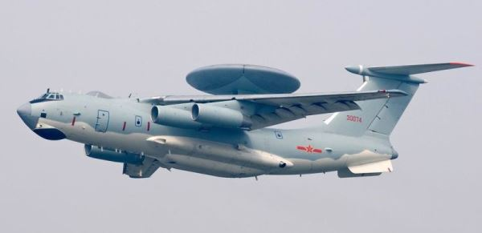
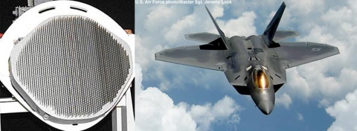
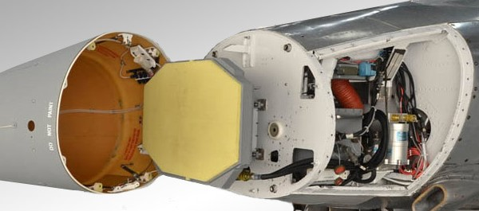
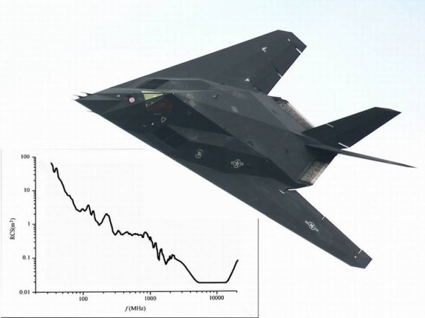
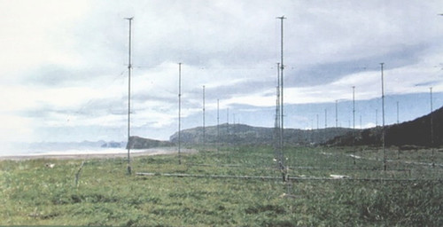

2014-08-21 18:43:00
最新的雷達天線技術是AESA。英文的“Active”一般翻譯為“主動”，它的真正涵義是指陣列的每個單元都有自己的驅動邏輯，可以獨立工作。而“Passive”（“被動”）當然就是指很多單元共用一個驅動邏輯。這個技術性的辭彙定義和15年前用在LCD（Liquid Crystal Display，液晶顯示）螢幕的所謂Active Matrix（主動矩陣）和Passive Matrix（被動矩陣）是一様的。用在雷達天線陣列上，主動陣的每個單元有它自己的T/R Module（發射/接收組件），而被動陣必須共用一個微波產生器。
AESA相對於PESA的優點在三個方面：首先，AESA的電磁波通路比縫隙陣列還要短，雖然T/R Module的效率稍低於PESA和縫隙陣列用的TWT（Traveling Wave Tube，行波管） ，但是整體來說，AESA的效率還是最高的。其次，現代的T/R Module用的是固態（Solid State）的砷化鎵（GaAs）晶片，可靠性要遠高於TWT。但是最重要的差別還是在於AESA可以數位化，以軟體程式來控制波束，所以有許多以前想都想不到的新功能，例如它可以同時發射好幾個波束，這些波束甚至可以用不同的頻率等等。又如雷達幹擾器的工作方式之一是在接受到敵方雷達波後，立刻送回一個和反射波相似但是頻率稍變的波束，用以困惑對方的相位多普勒電路，這個功能可以整合進AESA雷達裡面。
最早實用化的AESA是瑞典Ericsson在1985年開始研發的Erieye空用預警雷達（AEW&C，Airborne Early Warning & Control）。 Ericsson是世界微波通訊的領頭企業，完全有能力獨力發展全新一代的微波探測技術。而當時美國的軍用雷達製造商已經花了20年的心血和資金在老技術上，把縫隙陣列的技術潛力發揮得淋漓盡致，第一世代的AESA看來就並不是特別有吸引力。 1993年Erieye服役之後證實了AESA雷達的革命性優勢，AESA成為所有新雷達的標凖，除了破產的俄國和歡欣享受和平紅利的英法沒有積極發展AESA之外，世界上主要的軍工國家都全力投入，也就是以色列，美國和中共。

瑞典空軍的Erieye預警機，載機是Saab 340。
蘇聯解體之時，軍工企業忽然斷炊，連薪水都發不出來，絶大多數猶太裔的專家因而移民以色列，以色列一夕之間躋身一流軍工國家之列，在雷達方面他們的傑作就是Phalcon（Phased Array L-band Conformal Radar）空用預警雷達。 Phalcon採用L Band，比用S Band的Erieye抗隱身能力更勝一籌，是1990年代世界最佳的空用預警雷達，比美軍的E3用的PESA先進了一代。

第一代的Phalcon預警機，型號EL/M-2075，載機是波音707。

第二代的Phalcon預警機，型號EL/W-2090，載機是俄製的IL-76；原本為中共開發，後來轉售給印度；轉盤裡是背對背的雙面陣列，依賴機械旋轉來完成360 °掃瞄。中共在1994年簽約引進Phalcon，但美國強迫以色列於2000年撕毀合約，拆下已裝好的雷達，於是中共加速投資自主開發的L-Band AESA。 2005年，首艘052C驅逐艦服役，艦上裝有四面H/LJG346陣列，是世界第一部大型艦用AESA雷達。 2013年，052D驅逐艦服役，裝有更先進的H/LJG346A雷達，改用更大功率的T/R module和內建液冷系統，因而外表不再是為氣冷而設計的曲面。在空軍方面，空警2000預警機於2007年加入中共空軍序列，性能超過了Phalcon。隨後又發展了小號的空警200。去年，第二代的空警500開始露面。如今共軍預警機的開發瓶頸不在雷達，而在載機，這必須等到C919客機在2016年服役之後才能完全解決。

共軍的空警2000，載機也是俄製的IL-76，原本裝了Phalcon，後來以色列拆下雷達將空機交給中共；雷達盤為固定式，內含三個陣列，由純電子掃瞄便可完成360°監視。
美國在蘇聯解體之後，也享受和平紅利，並沒有急著換裝已有的縫隙陣列和PESA雷達；只有為全新的F22開發X-Band AESA，這就是AN/APG-77，2006年服役，它是世界第一部實用的戰鬥機用AESA（之前日本F-2裝備的J/APG-1性能並不比同時代的縫隙陣列雷達有明顯的優勢），至今仍是所有其他戰機雷達的標竿。到2010年後，升級F15，F16和F18用的AESA雷達先後完成，不過美國目前財務困難，全面換裝遙遙無期。

AN/APG-77和F-22；這個AESA有1956個單元，至今仍無其他戰機雷達能出其右。
AN/APG-77和後續為F35而衍生的AN/APG-81雖然技術先進，功能強大，其反隱身的能力仍然受X-Band波長的限制，遠不及共軍裝在預警機和區域防空艦的L -Band和S-Band AESA。這當然不是巧合。美國獨霸隱身技術有30年之久，他自己沒有迫切的反隱身需求，而中俄則相反。尤其是中共，其軍用電子技術經過20多年的精心培育，已經發展到幾乎趕上美國的地步，不但在大型低頻AESA領先美國，連X-Band雷達也只有5-10年之遙，例如前年定型的J-10B配有中共第一代X-Band AESA（有人說J-10B原本裝了PESA，生產很小的數目後AESA就出來了，從此改用新雷達；不論這傳言真假，2014年下線的J-10用的確是AESA），相當於美國正在兜售給國軍F-16A/B升級用的SABR（Scalable Agile Beam Radar）；而J-16所配備的中共第二代X-Band AESA則基本等同美國海軍為F-18E/F升級所開發的AN/APG-79。

Northrop的Sabr是三種F-16可用的AESA之一，原定給國軍和美軍升級F-16用的，但美軍自己的升級計劃因缺乏經費而取消；南韓訂購的RACR（Raytheon Advanced Combat Radar）則還在進行中，或許國軍可以改向Raytheon購買；Northrop的AN/APG-80用電太多，只能裝在全新的F-16 Block61上。

F-117的雷達截面積（縱軸）對雷達波頻率（橫軸）的關係。只有在5-15GHz（即C，X和Ku-Band）才完全隱身，對L-Band其截面積高達0.6平方公尺，空警2000可以在250公里外輕鬆截獲其反射訊號。F-117的飛行性能基本上像一隻裝了印擎的豬，執行任務全靠隱身，一旦遇到L-Band預警機就只有等被燒烤的份。難怪空警2000一出現，美軍就急忙在2008年把F-117提前淘汰，還嘴硬說是為F-35讓道；其實F-35計劃毛病叢生，到現在還不能真正量產。
希望有耐心讀完全文的讀者到此了解為什麼F22和F35對共軍已經沒有壓倒性的優勢。美軍因此必須依賴B2和B3這些隱身轟炸機。它們因為採用了飛翼形設計，外形折線尺寸在十公尺以上（如B2翼展每邊26.2公尺，其前緣就是一條直線），對L-Band仍然具有極為有效的隱身能力。當然共軍也在開發HF頻道的大波長雷達陣列，由於電離層的反射，HF電磁波甚至可以越過地平綫前進，因此又叫“天波雷達”，其波長則剛好對隱身轟炸機有最佳的探測效果。像這様的道高一尺魔高一丈的攻防技術競賽是軍事歷史上的常態，在可見的未來，仍將繼續下去。

中共海軍在東海海岸線上建立的HF天波雷達陣列。